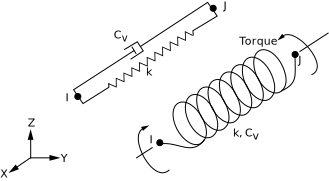

Modul 3 Elementtypen und Ansatzfunktionen¶
Lernziele¶
Nach Abschluss dieses Moduls können die Studierenden:
- den Einfluss der Ansatzfunktionen und der Elementordnung (linear vs. quadratisch) auf die Genauigkeit eines FEM-Ergebnisses erläutern,
- den Zusammenhang zwischen Netzverfeinerung, Elementverzerrung und Ergebnisqualität bewerten,
- den Begriff der Konvergenz besser erklären und eine h-Studie (Netzeinflussstudie) durchführen,
- aus FEM-Ergebnissen ableiten, wann weitere Netzverfeinerung oder höhere Ansatzordnung erforderlich ist.
Ansatzfunktion (Theoretischer Hintergrund nach Bielak1)¶
Im vorherigen Kapitel wurde die Finite-Elemente-Methode in vereinfachter Form eingeführt. Dabei stand im Vordergrund, wie komplexe Bauteile durch eine diskrete Anzahl von Elementen angenähert und über Knotenpunkte miteinander verbunden werden.
In diesem Modul wird die theoretische Grundlage vertieft, auf der diese Methode basiert. Im Mittelpunkt stehen die mathematischen Prinzipien der Diskretisierung, die Form der Ansatzfunktionen sowie der Einfluss der Elementordnung auf die Genauigkeit und Konvergenz des Ergebnisses. Diese Zusammenhänge bilden das Fundament, um die späteren FEM-Ergebnisse physikalisch korrekt zu interpretieren und den Einfluss der Netzqualität systematisch zu bewerten.
FEM beruht auf der Idee, ein kontinuierliches physikalisches System in eine endliche Anzahl kleiner, einfach beschreibbarer Teilbereiche zu zerlegen. Diese Teilbereiche werden als Elemente bezeichnet. Die Verbindungspunkte zwischen ihnen heißen Knoten.
Innerhalb jedes Elements wird das physikalische Verhalten (z. B. die Verschiebung \(u\)) nicht exakt, sondern durch eine einfache mathematische Funktion beschrieben. Diese Funktion wird als Ansatzfunktion bezeichnet.
Diskretisierung und Ansatzfunktion¶
Statt das gesamte Bauteil kontinuierlich zu beschreiben, wird jedes Element einzeln betrachtet. Für jedes Element gilt: Die Verschiebung zwischen den Knoten wird durch eine Ansatzfunktion angenähert.
Ein eindimensionaler Stab wird dazu in mehrere Finite Elemente zerlegt, deren Grenzen durch Knotenpunkte festgelegt sind. Die folgende Abbildung zeigt ein solches Netz aus \(N\) Elementen. Die Knoten sind entlang der Stabachse nummeriert, die Elemente werden mit \(\Omega_1, \Omega_2, \dots, \Omega_N\) bezeichnet.
{kind=link}
Erläuterung zur Element- und Knotennummerierung
- Zwischen zwei aufeinanderfolgenden Knoten \(x_i\) und \(x_{i+1}\) liegt jeweils ein Element \(\Omega_i\).
- Die Knoten sind entlang der Stabachse fortlaufend nummeriert – von \(x_1\) bis \(x_{N+1}\).
- Der Index \(i\) steht stellvertretend für eine beliebige Position im Netz (z. B. \(i = 3\) für das dritte Element).
- Insgesamt gilt: Ein Netz mit \(N\) Elementen besitzt \(N + 1\) Knoten.
Jeder Knoten erhält eine eigene Ansatzfunktion \(\Phi_i(x)\), die im direkten Nachbarbereich ungleich null ist und außerhalb davon verschwindet. Diese Funktionen werden häufig auch als Hutfunktionen bezeichnet, da ihr Verlauf an die Form eines Daches erinnert.
Für die Gesamtlösung \(u(x)\) gilt:
Jede Funktion \(\Phi_i(x)\) beschreibt also den Einfluss des Knotens \(i\) auf die Gesamtverschiebung. Am eigenen Knoten gilt \(\Phi_i(x_i) = 1\), an allen anderen Knoten \(\Phi_i(x_j) = 0\).
{kind=link}
Erläuterungen zu den Ansatzfunktionen
-
Jede Ansatzfunktion \(\Phi_i(x)\) besitzt nur eine lokale Tragweite – sie ist nur in den direkt angrenzenden Elementen aktiv und außerhalb dieses Bereichs null.
Dadurch beeinflusst jeder Knoten nur seine unmittelbare Umgebung, was zur sparsamen Struktur der globalen Gleichungen führt. -
Der Begriff Hutfunktion beschreibt ausschließlich die Form der linearen Ansatzfunktionen.
Bei quadratischen oder höheren Elementen sind die Funktionen gekrümmt; sie erfüllen dieselben Bedingungen \(\Phi_i(x_i)=1\), \(\Phi_i(x_j)=0\), besitzen aber keine einfache Dachform mehr. -
Die Überlagerung aller Ansatzfunktionen ergibt die angenäherte Verschiebungsverteilung \(u(x)\) entlang des gesamten Bauteils.
Damit wird das ursprünglich kontinuierliche Problem auf eine endliche Zahl von Freiheitsgraden – die Verschiebungen \(u_i\) an den Knoten – reduziert.
Lineare Ansatzfunktionen (1D-Elemente)¶
Die im vorherigen Abschnitt eingeführte allgemeine Näherung
gilt für das gesamte System. Betrachtet man nun ein einzelnes Element mit zwei Knoten an den Positionen \(x_1 = 0\) und \(x_2 = L\), so reduziert sich der Ausdruck auf zwei lokale Ansatzfunktionen \(N_1(x)\) und \(N_2(x)\):
Die Aufgabe besteht nun darin, diese \(N_i(x)\) so zu bestimmen, dass sie die Interpolationsbedingungen
erfüllen. Da die Verschiebung zwischen den Knoten linear verlaufen soll, wird angenommen:
Einsetzen der Randbedingungen liefert:
Vergleicht man diesen Ausdruck mit \(u(x)=N_1(x)u_1+N_2(x)u_2\), so ergeben sich die linearen Ansatzfunktionen:
Die Ableitung nach der Koordinate \(x\) ergibt die konstante Dehnung \(\varepsilon=\frac{du}{dx}\). Lineare Elemente können daher nur lineare Verformungsverläufe abbilden.
Bei gekrümmten oder stark veränderlichen Verläufen – etwa in der Nähe von Kerben oder Kontaktzonen – liefern sie nur eine grobe Näherung. Eine höhere Genauigkeit wird dort durch feinere Netze oder höhergradige Ansatzfunktionen erreicht.
Quadratische Ansatzfunktionen (1D-Elemente)¶
Quadratische Elemente besitzen drei Knoten – zwei Randknoten und einen Mittenknoten.
Im Gegensatz zu linearen Elementen verlaufen die Ansatzfunktionen nun quadratisch und können dadurch auch gekrümmte Verformungen innerhalb des Elements abbilden.
{kind=link}
In der Abbildung sind die drei Formfunktionen \(\Phi_1(\xi)\), \(\Phi_2(\xi)\) und \(\Phi_3(\xi)\) dargestellt.
- \(\Phi_1(\xi)\) und \(\Phi_3(\xi)\) verlaufen jeweils durch die Randknoten und verschwinden an den anderen Knoten.
- \(\Phi_2(\xi)\) besitzt ihr Maximum im Mittenknoten und geht an den Rändern gegen null.
Zur Beschreibung wird häufig die normierte Koordinate
verwendet, sodass das Element im Intervall \(0 \le \xi \le 1\) liegt. Die drei Ansatzfunktionen lauten:
Damit ergibt sich die Verschiebung innerhalb des Elements zu:
Quadratische Elemente können sowohl lineare als auch gekrümmte Verläufe der Verschiebung \(u(x)\) und der Spannung \(\sigma(x)\) darstellen. Bei gleicher Netzgröße liefern sie deutlich genauere Ergebnisse als lineare Elemente, sind jedoch aufgrund der zusätzlichen Freiheitsgrade pro Element rechenintensiver.
Einfluss der Elementordnung¶
Vergleicht man lineare und quadratische Elemente am gleichen Bauteil, so zeigt sich:
- Quadratische Elemente approximieren den Spannungs- und Verschiebungsverlauf besser.
- Die Konvergenzgeschwindigkeit (Annäherung an die exakte Lösung) steigt mit der Ansatzordnung.
- Bei linearen Elementen muss die Netzgröße \(h\) stärker verringert werden, um vergleichbare Genauigkeit zu erreichen.
Die wichtigsten Unterschiede zwischen linearen und quadratischen Elementen sind in der folgenden Übersicht zusammengefasst:
| Kriterium | Lineare Elemente (p = 1) | Quadratische Elemente (p = 2) |
|---|---|---|
| Ansatzfunktion | geradlinig zwischen den Knoten | gekrümmt, Mittenknoten vorhanden |
| Verformungsverlauf | linear, keine Krümmung | gekrümmt, auch nichtlineare Verläufe abbildbar |
| Genauigkeit | gering, konvergiert langsam | hoch, schnellere Konvergenz |
| Rechenaufwand | gering | höher durch zusätzliche Freiheitsgrade |
| Einsatzgebiet | einfache Geometrien, homogene Belastungen | Bereiche mit Krümmung, Spannungsgradienten oder Kontaktzonen |
Konvergenzverhalten und Netzqualität¶
Die Genauigkeit einer FEM-Lösung hängt von zwei Faktoren ab: der Elementgröße \(h\) und der Ansatzordnung \(p\).
- \(h\) beschreibt die charakteristische Länge eines Elements (also die Netzfeinheit).
- \(p\) steht für die Polynomordnung der Ansatzfunktion (linear, quadratisch, …).
Mit abnehmender Elementgröße und höherer Ansatzordnung nähert sich die numerische Lösung der exakten Lösung an. Der verbleibende Unterschied zwischen der exakten (wahren) und der numerischen (FEM-)Lösung wird als Fehler \(e\) bezeichnet:
Da die exakte Lösung \(u_\text{exakt}\) meist unbekannt ist, wird der Fehler nicht direkt, sondern über seine Größenordnung abgeschätzt. Für viele lineare Probleme lässt sich sein Verlauf mit der Elementgröße durch eine Potenzfunktion beschreiben:
Hierbei gilt:
- \(C\) fasst den Einfluss von Geometrie, Material und Randbedingungen zusammen,
- \(h\) steht für die charakteristische Elementgröße,
- \(p\) beschreibt die Ansatzordnung,
- \(\| e \|\) ist eine Maßzahl für den Fehler, z. B. die Energie- oder \(L_2\)-Norm.
Je kleiner \(h\) und je größer \(p\), desto kleiner wird der Fehler.
- Wird die Elementlänge \(h\) halbiert, reduziert sich der Fehler bei quadratischen Elementen etwa viermal, bei linearen nur zweimal.
- Eine Konvergenzprüfung (h-Studie) überprüft, ob das Ergebnis unabhängig vom Netz ist.
In ANSYS kann eine solche Untersuchung mit verschiedenen Netzgrößen durchgeführt werden. Typischerweise wird dabei die maximale Spannung oder Verschiebung gegen die Elementanzahl oder die Elementgröße aufgetragen. Ein stabiler (konvergenter) Verlauf zeigt, dass das Ergebnis nicht mehr vom Netz abhängt.
Die folgende Abbildung zeigt beispielhaft den Zusammenhang zwischen Fehlermaß und Netzverfeinerung. In doppeltlogarithmischer Darstellung erscheinen die Kurven linear – ihre Steigung entspricht der jeweiligen Konvergenzordnung \(p\).
 Bildquelle 1
Bildquelle 1
Elementtypen in ANSYS¶
Das Prinzip der Ansatzfunktionen überträgt sich direkt auf höhere Dimensionen. Unabhängig davon, ob ein Stab, eine Fläche oder ein Volumenkörper analysiert wird – die Grundidee bleibt dieselbe: Ansatzfunktionen beschreiben, wie sich Verschiebungen oder andere physikalische Größen zwischen den Knotenpunkten verhalten.
In der Finite-Elemente-Software werden diese mathematischen Funktionen über konkrete Elementtypen abgebildet. Je nach Dimension und Ansatzordnung ändert sich dabei die Anzahl der Knoten und damit die Genauigkeit der Approximation.
| Dimension | Beispiel-Elemente (ANSYS) | Knotenanzahl | Ansatzordnung |
|---|---|---|---|
| 1D | LINK180 | 2 / 3 | linear / quadratisch |
| 2D | PLANE182 / 183 | 4 / 8 | linear / quadratisch |
| 3D | SOLID185 / 186 | 8 / 20 | linear / quadratisch |
Die Tabelle zeigt typische Elementtypen aus ANSYS Mechanical:
- LINK180 ist ein linienförmiges 1D-Element, das beispielsweise Stäbe oder Zugglieder beschreibt.
- PLANE182 und PLANE183 sind 2D-Flächenelemente, die ebene oder rotationssymmetrische Strukturen abbilden können.
- SOLID185 (linear) und SOLID186 (quadratisch) sind 3D-Volumenelemente in Hexaeder-Form, die für den allgemeinen Festkörperzustand verwendet werden.
1D-Elemente bestehen somit aus Liniensegmenten, 2D-Elemente bilden Flächen ab, und 3D-Elemente beschreiben Volumina. Mit zunehmender Dimension steigt die Zahl der Knotenpunkte und Freiheitsgrade – und damit das Potenzial für eine genauere und realistischere Beschreibung des physikalischen Verhaltens.
{kind=link}
Bei jeder Dimension kann zusätzlich die Ansatzordnung verändert werden. Linear bedeutet, dass die physikalischen Größen zwischen den Knoten geradlinig verlaufen. Quadratische und kubische Elemente besitzen Mittenknoten, wodurch sich die Form innerhalb eines Elements gekrümmt darstellen lässt – ein entscheidender Vorteil bei runden oder komplexen Geometrien.
Die folgende Abbildung zeigt ein halbkreisförmiges Gebiet, das mit unterschiedlichen geometrischen Ansatzordnungen diskretisiert wurde. Je höher die Ordnung, desto besser folgt die Netzgeometrie der tatsächlichen Rundung: lineare Elemente bilden den Kreis nur grob ab, während quadratische und kubische Elemente die Kontur deutlich glatter wiedergeben. Die blauen Punkte kennzeichnen die Knotenpositionen.
 Bildquelle2
Bildquelle2
Zusammenfassung
Die Kombination aus Elementtyp (1D–3D) und Ansatzordnung (linear–quadratisch) bestimmt also, wie fein und wie realistisch ein physikalischer Zusammenhang abgebildet werden kann.
In der Praxis wählt man den Elementtyp so, dass die Geometrie und der Belastungszustand bestmöglich beschrieben werden, mit dem Ziel, eine präzise, aber numerisch effiziente Simulation zu erreichen.
Die Wahl des passenden Elementtyps richtet sich nach Geometrie, Belastungsart und relevanter Physik. Ziel ist stets, mit minimalem Rechenaufwand eine physikalisch konsistente Beschreibung zu erreichen. Zum Beispiel reduzieren Balken und Schalen Dimensionen, Kontakt- und Cohesive-Elemente erweitern den physikalischen Geltungsbereich, thermische und Feder-Elemente koppeln zusätzliche Disziplinen.
Spezial-Elemente
Neben den Standard-Volumen- und Flächenelementen existiert eine Vielzahl spezialisierter Elementtypen, die bestimmte physikalische oder geometrische Besonderheiten effizient abbilden. Die folgenden Beispiele zeigen typische Vertreter in ANSYS Mechanical.
Schalenelemente
* SHELL181 / SHELL281: dünnwandige 2D-Elemente mit Membran- und Biegeverhalten.
Geeignet für Bleche, Gehäuse, Rohre und Schalenstrukturen.

Bildquelle3
Kontaktelelemente
* CONTA174 / TARGE170: modellieren Reibung, Haftung, Öffnen / Schließen.
Wichtig für Presssitze, Lagerungen und Montagezustände.
{kind=link}
Cohesive- und Interface-Elemente
* INTER205: Modellierung von Klebverbindungen, Laminaten, Delamination.
Erlaubt schrittweises Versagen durch Schädigungsgesetze.
Feder-, Lager- und Zusatz-Elemente

Bildquelle3
{kind=link}
- COMBIN14: lineare Feder / Dämpfer zwischen Knoten
- MPC184: kinematische Kopplungen
- MASS21: konzentrierte Masse
Thermische Elemente
- SOLID70 / SOLID90: stationäre / transiente Wärmeleitung
- SURF152: Wärmeaustausch über Oberflächen

-
Jacobo Bielak. The Finite Element Method. Springer International Publishing, Cham, 2024. ISBN 978-3-031-56368-3. doi:10.1007/978-3-031-56369-0. ↩↩↩↩↩
-
Finite element mesh refinement definition and techniques. 23.10.2025. URL: https://www.comsol.com/multiphysics/mesh-refinement (visited on 23.10.2025). ↩↩
-
Ansys help. 27.10.2025. URL: https://ansyshelp.ansys.com/ (visited on 27.10.2025). ↩↩↩